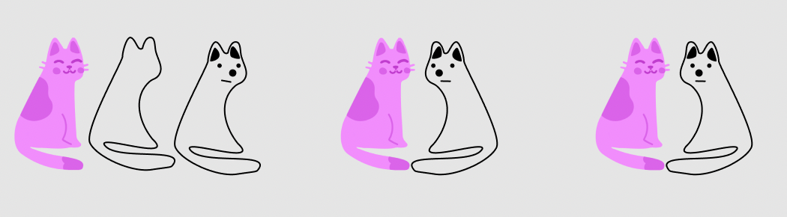

The UX desginer at my intern introduced me to vector networks in Figma, a tool to create smooth curves without drawing them myself. Had quite some fun playing around lol.
Still not sure how I ended up with a dog when trying mimic this cat but That's me lolThe hardest part while doing these was determining where the line should curve, and by how much. Often an extra nodes would make the curve overly sharp to fit the original image, and too little nodes makes the line fits less well with the sample image.
I did have fun making these though, and felt like, the mere attempt of me trying to re draw these, was something I wish to record here.